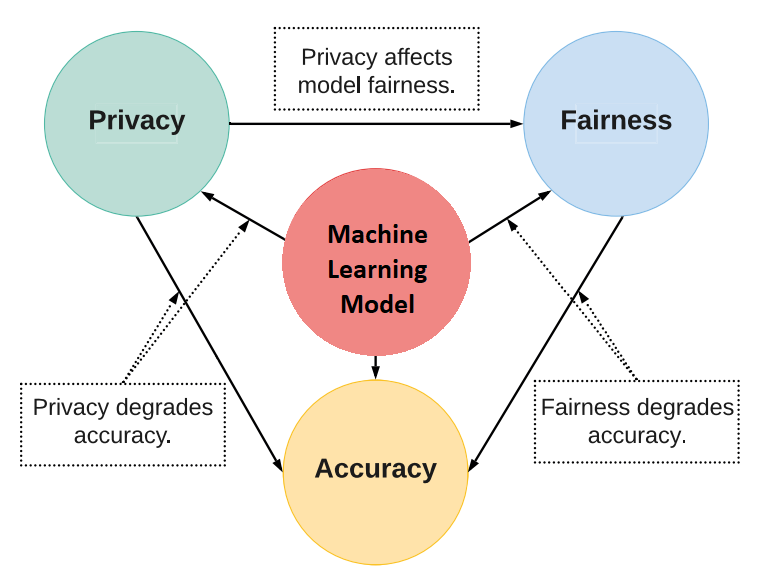
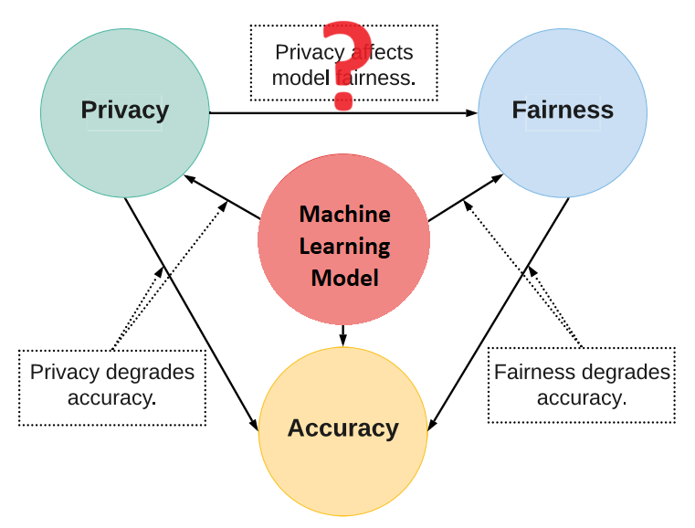

Bogdan Ficiu, Neil D. Lawrence, Andrei Paleyes
Department of Computer Science and Technology, University of Cambridge
BIAS workshop, ECML 2023

Image source: Zhang et al. 2021 "Balancing Learning Model Privacy, Fairness, and Accuracy With Early Stopping Criteria"

But... (Local) Differential Privacy has NO Disparate Impact on Fairness!
Image source: Gaudrie 2019 "High-Dimensional Bayesian Multi-Objective Optimization"